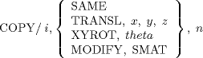

| 13.2. The Transform and COPY (COPY-INDEX) Statements | ||
|---|---|---|
 | Chapter 13. Cutter Path Transformation Statements |  |
| 13.2. The Transform and COPY (COPY-INDEX) Statements | ||
|---|---|---|
| | Chapter 13. Cutter Path Transformation Statements | |
A given set of cutter points can be repeated in the part program output by using COPY and INDEX statements. Also, the information can be transformed as it is copied.
he INDEX statement is used to establish a reference point to be used in a copy operation. The two forms of this statement are as follows:
INDEX/ i
This specifies the location at which the copying operation is to begin.
INDEX/ i, NOMORE
This specifies the location at which the copying operation is to terminate. The integer i is used to match the INDEX statement with the associated COPY statement.
This specifies the location at which the copying operation is to terminate. The integer i is used to match the INDEX statement with the associated COPY statement.
The COPY statement is used to indicate the location in the part program where the copying operation is to take place. The COPY statement also contains information regarding any transformations that are to occur during the copying process. Further, if an INDEX/ i, NOMORE statement is not present, the COPY statement indicates the location at which the copying operation is to terminate. The general format of the COPY statement is:

The general meaning of the COPY statement is:
Generate n copies of the cutter points resulting from the statements in the part program between the INDEX/ i statement and either the INDEX/ i, NOMORE statements or the COPY/ i ... statement.
The following restrictions apply to the index value i:
It must be an integer.
It must be the same number in associated INDEX and COPY statements.
It must not be used in more than one set of copy instructions in the same part program.
The SAME option specifies that the information is to be copied only, and no transformation takes place. The formant of the statement is:
COPY/ i, SAME, n
The TRANSL option specifies that the information is to be translated as it is copied. The format of the statement is:
COPY/ i, TRANSL, x, y, z
The cutter center points between the INDEX and COPY statements are translated to a coordinate system whose origin is defined by the coordinates x, y, z. Translations are accumulative in the copying process; that is, the original data is not translated, the first copy is translated by x, y, z, the second copy is translated by 2x, 2y, 2z, and the nth copy is translated by nx, ny, nz.
The XYROT option specifies that the information is to be rotated as it is copied. The format of the statement is:
COPY/ i, XYROT, theta, n
The appropriate cutter center points are rotated through an angle theta in the XY-plane as they are copied. The rotation is accumulative; that is, the original data is not rotated, the first copy is rotated by theta degrees, the second copy is rotated by 2 * theta, etc.
The MODIFY option specifies that a given matrix is to be used to transform the information as it is copied. The format of this statement is:
COPY/ i, MODIFY, SMAT, n
where SMAT is the symbolic name of the matrix. The transformations are accumulative; that is, the original data is not transformed by the matrix SMAT, the first copy is the result of transforming the original data by the matrix SMAT, the second copy is transformed by the matrix, that is the product of SMAT with itself, the third copy is transformed by the matrix, that is the product of the matrix resulting from the last copy operation and SMAT, etc.
There are two basic forms of the COPY feature. The most basic form is as follows:
1) INDEX/ K
$$
$$ Other APT Statements
$$
2) COPY/ K, SAME, 2
When the statement labeled 2 is encountered, all of the statements between 1 and 2 are copied twice with no modifications. The following example indicates a situation where a transformations is required:
3) INDEX/ L
$$
$$ Other APT Statements
$$
4) COPY/ L, MODIFY, MAT1, 1
In this instance, all of the information between statements 3 and 4 is copied once; also, all of the cutter location information is transformed by the symbolic matrix MAT1.
The alternate form of the copy feature is as follows:
a) INDEX/ J
$$
$$ Other APT Statements
$$
b) INDEX/ J, NOMORE
$$
$$ Other APT Statements
$$
c) COPY/ J, SAME, 3
In this case, where statement c is encountered, all of the information between statements a and b is copied three times (with no transformation). Any transformation can also be made with the alternate form by including the information in the COPY statement.
Two major rules must be observed when using the copy feature:
Copy loops are not permitted to overlap. The following set of statements is not permitted.
╭── INDEX/ J │ ... │ ... │ ... ╭───── INDEX/ K │ │ ... │ │ ... │ │ ... │ ╰── COPY/ J, SAME, 1 │ ... │ ... │ ... ╰───── COPY/ K, SAME, 2
The same index value cannot be used in more than one set of copy instructions. The following set of statements is not permitted.
╭── INDEX/ I
│ ...
│ ...
│ ...
╰── COPY/ I, SAME, N
...
...
...
╭── INDEX/ I
│ ...
│ ...
│ ...
╰── COPY/ I, SAME, M
The INDEX and COPY statements can be nested within another set of INDEX and COPY statements to a level of three. The following example illustrates the nesting of COPY loops to a level of three:
╭──┭──┭── INDEX/ J
│ │ │ ...
│ │ │ GOTO/ x, y, z
│ │ │ ...
│ │ ╰── COPY/ J, SAME, n
│ ╰───── COPY/ J, TRANSL, A, B, C, n1
│ ...
│ ╭───── INDEX/ K
│ │ ...
│ │ ╭── INDEX/ L
│ │ │ ...
│ │ ╰── COPY/ L, MODIFY, SMAT, n2
│ │ ...
│ ╰───── COPY/ K, MODIFIER, SMAT, n3
│ ...
│ ╭── INDEX/ I
│ │ ...
│ ╰── COPY/ I, XYROT, Θ, n4
│ ...
╰──────── COPY/ J, SAME, n5
From the example, it is evident that:
Up to three COPY statements can reference the same INDEX statement.
A unique INDEX statement can be used for each COPY statement.
Different INDEX statements must contain different index numbers.
COPY loops can be nested to a level of three.
| |  | |
| Chapter 13. Cutter Path Transformation Statements |  | 13.3. Combined Use of TRACUT and COPY |